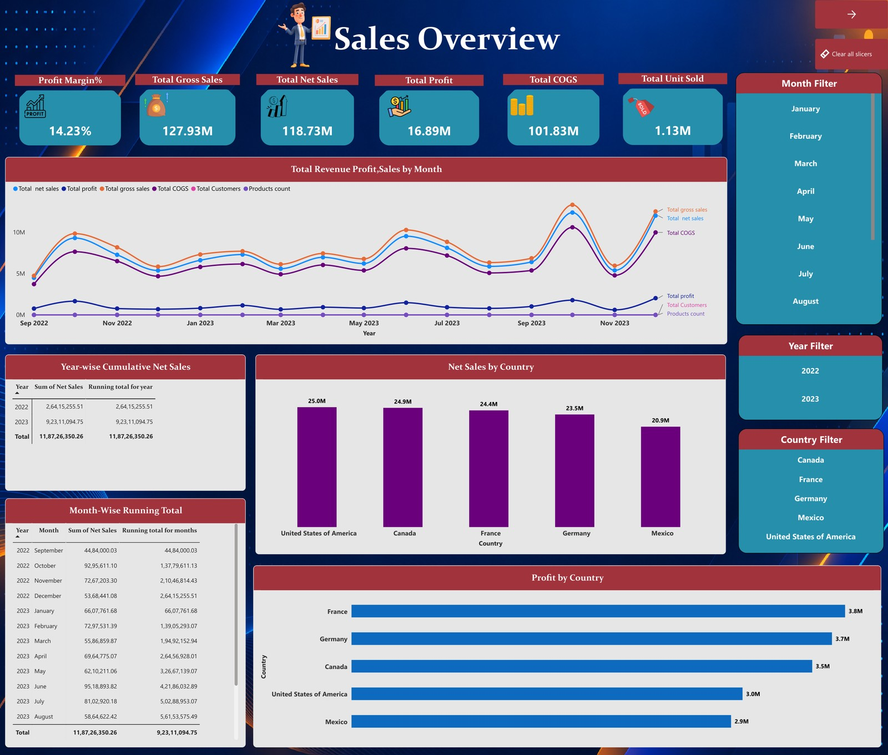

Finance Sales Performance Dashboard
A four-page Power BI report on a finance sales dataset — one model covering sales performance, customers, products and transactions.

Sales, customer, product and transaction data sat in separate tables, so totals, margin and customer behaviour could not be compared in one view.
Related the tables in Power BI, shaped them in Power Query and wrote DAX measures for net sales, COGS, profit, profit margin and running totals — then built four pages: Sales Overview, Customer Analysis, Product Analysis and Transaction Analysis.
127.93M gross sales, 118.73M net sales and 16.89M profit at a 14.23% margin on 1.13M units sold. Government is the largest segment at 44.22% of net sales while Enterprise runs at a loss of 6.14L, and the United States leads net sales at 25.0M.
One connected model, four report pages: totals and country performance, customer rankings, product and segment contribution, and transaction behaviour.
Inside the project
- 127.93M gross sales, 118.73M net sales, 101.83M COGS and 16.89M profit
- 700 customers, 6 products and 5 segments, 1.13M units sold
- Six channels and five payment methods across 700 transactions
- Month-wise and year-wise running totals for net sales
- Slicers for month, year and country
How it was built
- Loaded the sales, transaction and calendar tables
- Cleaned and shaped the tables in Power Query
- Related calendar to transactions on date, and transactions to sales on customer ID
- Wrote DAX for net sales, COGS, profit, profit margin and running totals
- Assembled KPI cards, bars, donuts, a matrix and ranked tables across four pages